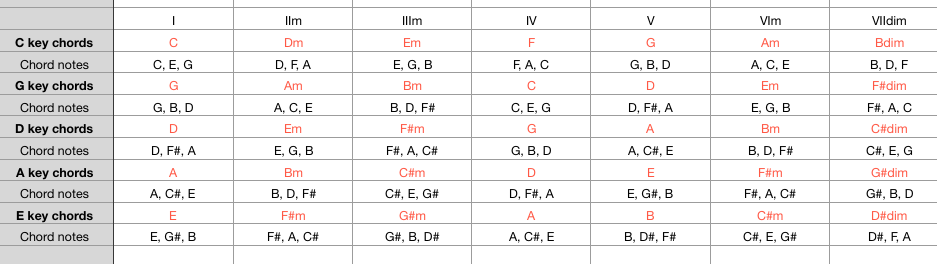
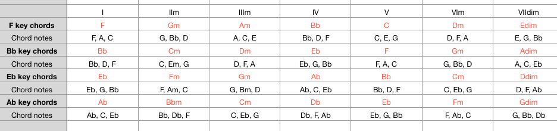
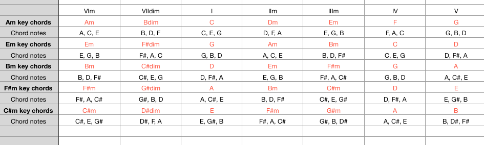
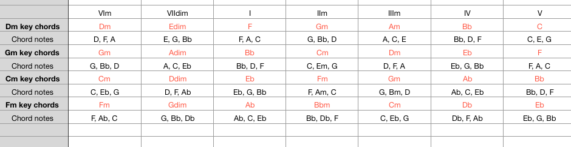

2. Chords
Major Chords
1) I, IIm, IIIm, IV, V, VIm, VIIdim.
2) In C key = 'I' means C chord.
3) In G key = 'IV' means Chord.
4) In A key = 'VII' means C#m chord.
5) In Bb key = 'VI' means Gm chords.(The rest are the same)


1) In Major Key, there's a lot of chord progressions
2) Ex) In Major key, you can use
(I - VI - IV - V), (I - II - III - V), (IV - V - VI - III), (IV - V - VI) progressions
Minor Chords
1) VIm, VIIdim, I, IIm, IIIm, IV, V.
2) In Am key = 'I' means Am chord.
3) In Bm key = 'IV' means Em Chord.
4) In Fm key = 'VII' means Dbm chord.
5) In Gm key = 'II' means Cm chord(The rest are the same)


1) In Minor Key, there's a lot of chord progressions
2) Ex) In Minor key, you can use
(VI - IV - I - V), (VI - IV - I - I), (VI - IV - I - III) progressions
Add)
This is real basic of chord progressions
so if you want to know more, search 'chord progressions' in google
There's a lot of chord progressions in world
You can get chord progressions from your favorite songs of artists